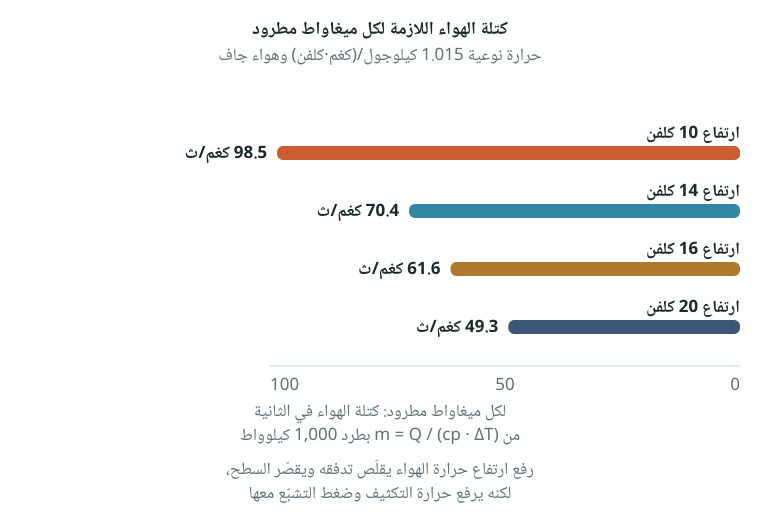

المكثّف المبرَّد بالهواء: 3,079 كغم هواء في الثانية لطرد 50 ميغاواط
Air-cooled condenser: dry cooling ties condensing pressure to the weather
المكثّف المبرَّد بالهواء يرمي حرارة البخار إلى الهواء الجوي لا إلى ماء يتبخّر، فيلزمه لطرد 50 ميغاواط 3,079 كغم هواء في الثانية بارتفاع حرارة 16 كلفن. وثمن ذلك أن حرارة التكثيف تصير حرارة الجو زائد فرق اقتراب ثابت، فيتبعها ضغط التشبّع: 19.946 كيلوباسكال عند 60 درجة مئوية مقابل 3.1699 عند 25.
محطة بخارية على أطراف الرياض تعمل صيفًا وهواء الخارج 46 درجة مئوية: مكثّفها لا يرمي الحرارة إلى ماء يتبخّر في برج، بل إلى الهواء مباشرة عبر زعانف وأنابيب. الفرق يبدو خيارًا بيئيًّا، لكنه يحدّد ضغطًا خلفيًّا ودورة كاملة.
الحساب يبدأ من ميزان الطاقة: القدرة المطرودة من البخار تساوي كتلة الهواء في حرارته النوعية في ارتفاع حرارته. لطرد 50 ميغاواط عبر هواء ترتفع حرارته 16 كلفن، بحرارة نوعية 1.015 كيلوجول/(كغم·كلفن)، يلزم 3,079 كغم هواء في الثانية؛ ولكل ميغاواط واحد 61.6 كغم/ث عند هذا الارتفاع. وبكثافة 1.093 كغم/م³ عند 50 درجة يصير هذا 2,817 مترًا مكعبًا في الثانية، ودفع هذا الحجم عبر الزعانف بفرق ضغط 150 باسكال وكفاءة مروحة 0.65 يستهلك 650 كيلوواط من عمود الإدارة.
ثم يأتي الثمن الحراري. حرارة التكثيف في المكثّف الهوائي ليست ثابتة: تساوي حرارة الهواء الجاف زائد فرق اقتراب (ITD) يحدده تصميم السطح. عند 46 درجة وفرق 14 كلفن يتكثف البخار عند 60 درجة وضغط تشبّعه 19.946 كيلوباسكال؛ وفي صباح شتوي عند 11 درجة يتكثف عند 25 درجة وضغطه 3.1699 كيلوباسكال. ستة أضعاف وثلث في الضغط الخلفي بين ساعتين من السنة، بينما برج تبريد رطب يثبّت التكثيف قرب 40 درجة مهما كان الجو.
والمقابل الذي يشتريه المكثّف الهوائي هو الماء: برج رطب يطرد الحمل نفسه باستهلاك 20.8 كغم ماء في الثانية، أي 1,796 مترًا مكعبًا في اليوم من ماء المكياج بحرارة كامنة 2,406.0 كيلوجول/كغم. المكثّف الهوائي لا يستهلك ماء تبريد، بل يستهلك كهرباء مراوح وضغطًا خلفيًّا أعلى على مدار السنة.
كيف تعمل الظاهرة؟
الحرارة تعبر أربع مقاومات على التوالي: غشاء التكثيف داخل الأنبوب بمعامل آلاف الواطات لكل متر مربع وكلفن، جدار الأنبوب، الزعنفة، ثم طبقة الهواء الملاصقة بمعامل عشرات الواطات فقط. المقاومة الأخيرة تحكم المجموع لأن معامل الهواء أقل من الداخلي بنحو مئة مرة، فتُضاعف المساحة الخارجية بالزعانف حتى يتوازن الجانبان. وحين يثبت تصميم السطح تصبح المواصلة الكلية ثابتة، وحرارة التكثيف تُختار من المعادلة Q = U·A·ΔT: حرارة تكثيف أعلى تعطي فرقًا أكبر مع الهواء، وهي الحرارة الوحيدة القابلة للحركة لأن حرارة الهواء لا تُختار. فارتفاع الجو يدفع حرارة التكثيف أمامه، وضغط التشبّع يتبعها أُسّيًّا، وينكمش فرق الإنثالبي في مرحلة التوربين الأخيرة بقدر ما يرتفع هذا الضغط.
العلاقة بالأرقام
ميزان الطاقة: ṁ = Q/(cp·ΔT)؛ بـ Q = 50,000 كيلوواط وcp = 1.015 كيلوجول/(كغم·كلفن) وΔT = 16 كلفن يعطي 3,079 كغم/ث. الحجم V̇ = ṁ/ρ = 3,079/1.093 = 2,817 م³/ث، وقدرة المراوح P = V̇·Δp/η = 2,817 × 150/0.65 = 650 كيلوواط، أي 1.3% من الحمل المطرود. حدود المعادلة: cp ثابتة والهواء جاف ولا تسرّب بين الزعانف وهيكل البرج؛ وعند 50 درجة ترتفع cp قليلًا عن قيمتها عند 25 فلا يتغير التدفق أكثر من 1%. أما ماء البرج الرطب فـ ṁ = Q/h_fg = 50,000/2,406.0 = 20.8 كغم/ث، ويكون 1,796 م³ في اليوم عند تشغيل عشرين ساعة.
مفاهيم متقاربة
المكثّف الهوائي ليس برج تبريد، والفرق في المرجع الحراري: البرج يبرّد ماءً إلى قرب حرارة البصلة الرطبة (wet-bulb) وفارقه يسمى approach؛ والمكثّف الهوائي يبرّد بخارًا إلى حرارة البصلة الجافة (dry-bulb) زائد فرق اقتراب، وفارقه يسمى ITD. في الرياض صيفًا البصلة الرطبة نحو 25 درجة والجافة 46، فبرج يبرد إلى 30 والهوائي لا ينزل تحت 46. وليس هو مبادلًا حراريًّا للهواء على سائل: وسيطه يعمل عند التشبّع فحرارته ثابتة وفرقه متوسط لوغاريتمي لا خطّي، وضغطه متغيّر تصميم لا ناتج ثانوي.
حدود التطبيق
الحساب يفشل في أربع حالات: عند تجاوز حرارة التصميم، إذ لا مساحة إضافية فيرتفع الضغط الخلفي حتى يضطر التوربين إلى خفض الحمل؛ وعند غبار الزعانف، فارتفاع مقاومة الهواء يخفض التدفق بين 10 و20% ويرفع حرارة التكثيف بلا تغيير في الحمل؛ وعند ريح متعامدة تعيد الهواء الساخن إلى المدخل (recirculation) فتضيف كلفنات لا تظهر في ميزان الطاقة؛ وتحت 5 درجات مئوية لا يستفيد المكثّف من البرودة لأن خطر التجمد في الأنابيب يفرض حدًّا أدنى للضغط. وهو أيضًا حساب حراري محض: لا يحكم على الكلفة الرأسمالية ولا مساحة الأرض، وكلتاهما تدفع ثمن 2,817 مترًا مكعبًا من الهواء في الثانية.

| الكمية | القيمة | المصدر |
|---|---|---|
| الحرارة النوعية للهواء الجاف عند 25 درجة مئوية | 1.015 kJ/(kg·K) | [1] |
| كثافة الهواء عند 50 درجة مئوية وضغط جوي | 1.093 kg/m³ | [2] |
| الحرارة الكامنة لتبخّر الماء عند 40 درجة مئوية | 2,406.0 kJ/kg | [3] |
| ضغط تشبّع الماء عند 60 درجة مئوية | 19.946 kPa | [4] |
| ضغط تشبّع الماء عند 25 درجة مئوية | 3.1699 kPa | [4] |
| تدفق الهواء اللازم لطرد 50 ميغاواط بارتفاع 16 كلفن — محسوب | 3,079 kg/s | [1] |
| تدفق الهواء لكل ميغاواط عند ارتفاع 16 كلفن — محسوب | 61.6 kg/(s·MW) | [1] |
| قدرة مراوح المكثّف عند 150 باسكال وكفاءة 0.65 — محسوب | 650 kW | [2] |
| تبخّر برج تبريد رطب لنفس الحمل — محسوب | 20.8 kg/s | [3] |
| ماء المكياج اليومي لبرج رطب لنفس الحمل — محسوب | 1,796 m³/day | [3] |
المصادر
- 1 University Physics Volume 2 — 1.4 Heat Transfer, Specific Heat, and Calorimetry (جدول الحرارة النوعية) — OpenStax, Rice University. openstax.org/books/university-physics-volume-2/pages/1-4-heat-transfer-specific-heat-and-calorimetry · اطُّلع عليه 2026-11-26
- 2 Air Density, Specific Weight, and Thermal Expansion Coefficients at Varying Temperatures and Pressures — Engineering ToolBox. www.engineeringtoolbox.com/air-density-specific-weight-d_600.html · اطُّلع عليه 2026-11-26
- 3 Water Properties: Vaporization Heat vs. Temperature — Engineering ToolBox. www.engineeringtoolbox.com/water-properties-d_1573.html · اطُّلع عليه 2026-11-26
- 4 Water Vapor Saturation Pressure: Data, Tables & Calculator — Engineering ToolBox. www.engineeringtoolbox.com/water-vapor-saturation-pressure-d_599.html · اطُّلع عليه 2026-11-26
استشهد بهذا المصطلح
الصيغتان مبنيتان من بيانات الصفحة نفسها: العنوان والتاريخ ورابط النسخة المنشورة.
المكثّف المبرَّد بالهواء: 3,079 كغم هواء في الثانية لطرد 50 ميغاواط — Air-cooled condenser: dry cooling ties condensing pressure to the weather. (2026). ديوان المعرفة — انفراد. https://infiradev.com/diwan/terms/air-cooled-condenser.html
@misc{air-cooled-condenser2026,
title = {المكثّف المبرَّد بالهواء: 3,079 كغم هواء في الثانية لطرد 50 ميغاواط},
titleaddon = {Air-cooled condenser: dry cooling ties condensing pressure to the weather},
howpublished = {{ديوان المعرفة — انفراد} — مرجع علمي عربي},
year = {2026},
url = {https://infiradev.com/diwan/terms/air-cooled-condenser.html},
urldate = {2026-11-26},
note = {مراجعة علمية: hermes (مراجعة معتمدة 2026-11-26)}
}
راجعه: hermes (مراجعة معتمدة 2026-11-26) · 2026-11-26 · آخر تحديث 2026-11-26